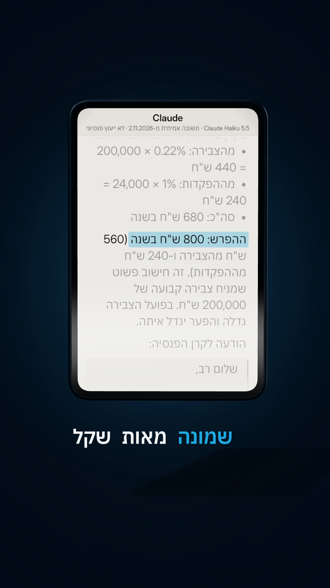

דמי ניהול בפנסיה
רוצים לדעת כמה אתם באמת משלמים על דמי ניהול בפנסיה, בשקלים? הנה השאלה מהריל. מכניסים ארבעה מספרים מהדוח השנתי, ו-Claude מחשב כמה זה עולה לכם בשנה, משווה לקרנות ברירת המחדל, וכותב הודעה מוכנה לקרן.
איך משתמשים
- פותחים את הדוח השנתי של קרן הפנסיה (באתר הקרן או במייל). מחפשים: סך הצבירה, דמי ניהול מהצבירה (%), דמי ניהול מההפקדה (%), וסך ההפקדה החודשית.
- מעתיקים את השאלה (הכפתור למטה), ממלאים את ארבעת המספרים במקום הקווים.
- מדביקים ב-Claude או ב-ChatGPT. הרצנו את השאלה באמת ב-Claude Opus 5.5 וב-Claude Haiku 5.5 (2.11.2026), עם מספרים לדוגמה, ושניהם הגיעו לאותם מספרים. בגרסה החינמית לא בדקנו בעצמנו, אז תבדקו את החשבון.
השאלה ל-Claude
אני רוצה לבדוק כמה אני משלם על דמי ניהול בקרן הפנסיה שלי. הנה הנתונים מהדוח השנתי שלי: - צבירה בקרן: ___ ש"ח - דמי ניהול מהצבירה: ___% בשנה - דמי ניהול מהפקדה: ___% - הפקדה חודשית (עובד + מעסיק): ___ ש"ח לידיעתך: קרנות ברירת המחדל שנבחרו במכרז של רשות שוק ההון (2024) גובות עד 0.22% מהצבירה ועד 1% מההפקדה. 1. תחשב כמה אני משלם בשנה בשקלים, בנפרד מהצבירה ומההפקדות, וביחד. 2. תחשב כמה הייתי משלם באותם נתונים בדמי ניהול של קרן ברירת מחדל, ומה ההפרש בשנה. 3. תכתוב לי הודעה קצרה ומנומסת לקרן הפנסיה, לבקש הורדה של דמי הניהול, עם המספרים. תענה בעברית, קצר וברור.
ההוכחה: התשובה האמיתית מהריל
Claude Haiku 5.5, 2.11.2026, עם מספרים לדוגמה (צבירה 200,000 ש"ח, 0.5% מהצבירה, 2% מההפקדה, 2,000 ש"ח בחודש). התשובה כמו שהיא:

**חישוב דמי הניהול הנוכחיים בשנה:** - מהצבירה: 0.5% × 200,000 = **1,000 ש"ח** - מההפקדות: 2% × 24,000 (2,000 לחודש × 12) = **480 ש"ח** - **סה"כ: 1,480 ש"ח בשנה** **בקרן ברירת מחדל באותם נתונים:** - מהצבירה: 0.22% × 200,000 = 440 ש"ח - מההפקדות: 1% × 24,000 = 240 ש"ח - **סה"כ: 680 ש"ח בשנה** **ההפרש: 800 ש"ח בשנה** (560 ש"ח מהצבירה ו-240 ש"ח מההפקדות). זה חישוב פשוט שמניח צבירה קבועה של 200,000 ש"ח. בפועל הצבירה גדלה והפער יגדל איתה. **הודעה לקרן הפנסיה:** > שלום רב, > > אני מבקש/ת לבדוק האפשרות להפחתת דמי הניהול שאני משלם/ת בקרן הפנסיה שלי (מספר חבר/ה: [מספר]). > > כיום אני משלם/ת: > - 0.5% מדמי ניהול מהצבירה (כ-1,000 ש"ח בשנה לפי צבירה של 200,000 ש"ח) > - 2% מדמי ניהול מההפקדה (כ-480 ש"ח בשנה לפי הפקדה חודשית של 2,000 ש"ח) > > לשם השוואה, קרנות ברירת המחדל שנבחרו במכרז של רשות שוק ההון (2024) גובות עד 0.22% מהצבירה ועד 1% מההפקדה. > > אשמח לדעת האם ניתן להפחית את דמי הניהול בקרן שלי, או לעבור לתעריף תחרותי יותר. תודה מראש על התייחסותכם. > > בברכה, > [שם מלא] > [טלפון]
כדאי לדעת
- התקרה בחוק בקרן פנסיה מקיפה: 0.5% מהצבירה ו-6% מההפקדה. זה מקסימום, לא מחיר קבוע. בדקו מה כתוב בדוח שלכם.
- את 0.22% ו-1% מקבלים מי שמצטרפים לקרן ברירת מחדל (מכרז 2024: אלטשולר שחם, מיטב, מור, אינפיניטי, בתוקף עד סוף אוקטובר 2028). בקרן הנוכחית שלכם זה לא אוטומטי, מבקשים.
- לפני מעבר קרן: בודקים את הכיסויים הביטוחיים (נכות ושאירים). קרן ותיקה או פוליסה עם מקדם מובטח: לא עוברים בלי לבדוק מול הקרן.
- בהודעה לקרן ממלאים מספר עמית ושם רק בהודעה עצמה, לא בצ'אט.
🔒 לא מעלים לצ'אט את הדוח, תעודת זהות או מספר עמית. ארבעה מספרים מספיקים.
⚠️ זה לא ייעוץ פנסיוני. את ההחלטה עושים מול הקרן או יועץ פנסיוני מורשה. מקורות: תקנות דמי הניהול (כל זכות, "דמי ניהול בקרן פנסיה"), מכרז קרנות ברירת המחדל של רשות שוק ההון (2024).
כל יום כלי AI חדש שחוסך לכם כסף וזמן ← עקבו ב-@critifly